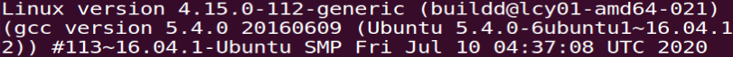
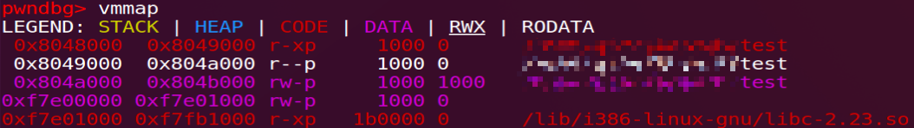
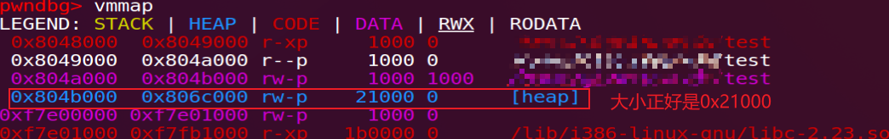

前言 本文通过为 glibc 2.23 malloc 源码添加注解的形式，详细阐述了程序第一次 malloc 时，从进入 malloc 函数到返回一个地址的过程中都经历了什么，对于高版本的 ptmalloc 也可以按照本文的思路和方法来调试分析。这里默认读者具备 malloc 系统的基本概念，知晓 malloc_chunk、malloc_state、malloc_par 等常见堆相关结构体的字段含义
环境 
测试代码 1 2 3 4 5 6 7 8 #include <stdlib.h> #include <stdio.h> void main () malloc (20 ); }
推荐下载 glibc 2.23 源码，对照 malloc/ 目录下文件来阅读本文，下面进入正片
流程跟踪 malloc.c 中无法找到 malloc 的直接实现，只有 __libc_malloc，而 malloc 实际上是它的别名：
1 strong_alias (__libc_malloc, __malloc) strong_alias (__libc_malloc, malloc )
调用 malloc 其实就是在调用 __libc_malloc，函数代码如下：
1 2 3 4 5 6 7 8 9 10 11 12 13 14 15 16 17 18 19 20 21 22 23 24 25 26 27 28 29 30 void *__libc_malloc (size_t bytes) { mstate ar_ptr; void *victim; void *(*hook) (size_t , const void *) = atomic_forced_read (__malloc_hook); if (__builtin_expect (hook != NULL , 0 )) return (*hook)(bytes, RETURN_ADDRESS (0 )); arena_get (ar_ptr, bytes); victim = _int_malloc (ar_ptr, bytes); if (!victim && ar_ptr != NULL ) { LIBC_PROBE (memory_malloc_retry, 1 , bytes); ar_ptr = arena_get_retry (ar_ptr, bytes); victim = _int_malloc (ar_ptr, bytes); } if (ar_ptr != NULL ) (void ) mutex_unlock (&ar_ptr->mutex); assert (!victim || chunk_is_mmapped (mem2chunk (victim)) || ar_ptr == arena_for_chunk (mem2chunk (victim))); return victim; }
由于全局变量 __malloc_hook 被赋予初值 malloc_hook_ini：
1 2 void *weak_variable (*__malloc_hook) (size_t __size, const void *) = malloc_hook_ini;
所以在 __libc_malloc 开头的检测中，会调用 malloc_hook_ini 并返回：
1 2 3 4 void *(*hook) (size_t , const void *) = atomic_forced_read (__malloc_hook); if (__builtin_expect (hook != NULL , 0 )) return (*hook)(bytes, RETURN_ADDRESS (0 ));
malloc_hook_ini 函数：
1 2 3 4 5 6 7 static void *malloc_hook_ini (size_t sz, const void *caller) __malloc_hook = NULL ; ptmalloc_init (); return __libc_malloc (sz); }
ptmalloc_init 函数：
1 2 3 4 5 6 7 8 9 10 11 12 13 14 15 16 17 18 19 20 21 22 23 24 25 26 27 28 29 30 31 32 33 34 35 36 37 38 39 40 41 42 43 44 45 46 47 48 49 50 51 52 53 54 55 56 57 58 59 60 61 62 63 64 65 66 67 68 69 70 71 72 73 74 75 76 77 78 79 80 81 82 83 84 85 86 87 88 89 90 91 92 93 94 static void ptmalloc_init (void ) if (__malloc_initialized >= 0 ) return ; __malloc_initialized = 0 ; #ifdef SHARED Dl_info di; struct link_map *l ; if (_dl_open_hook != NULL || (_dl_addr (ptmalloc_init, &di, &l, NULL ) != 0 && l->l_ns != LM_ID_BASE)) __morecore = __failing_morecore; #endif thread_arena = &main_arena; const char *s = NULL ; if (__glibc_likely (_environ != NULL )) { char **runp = _environ; char *envline; while (__builtin_expect ((envline = next_env_entry (&runp)) != NULL , 0 )) { size_t len = strcspn (envline, "=" ); if (envline[len] != '=' ) continue ; switch (len) { case 6 : if (memcmp (envline, "CHECK_" , 6 ) == 0 ) s = &envline[7 ]; break ; case 8 : if (!__builtin_expect (__libc_enable_secure, 0 )) { if (memcmp (envline, "TOP_PAD_" , 8 ) == 0 ) __libc_mallopt (M_TOP_PAD, atoi (&envline[9 ])); else if (memcmp (envline, "PERTURB_" , 8 ) == 0 ) __libc_mallopt (M_PERTURB, atoi (&envline[9 ])); } break ; case 9 : if (!__builtin_expect (__libc_enable_secure, 0 )) { if (memcmp (envline, "MMAP_MAX_" , 9 ) == 0 ) __libc_mallopt (M_MMAP_MAX, atoi (&envline[10 ])); else if (memcmp (envline, "ARENA_MAX" , 9 ) == 0 ) __libc_mallopt (M_ARENA_MAX, atoi (&envline[10 ])); } break ; case 10 : if (!__builtin_expect (__libc_enable_secure, 0 )) { if (memcmp (envline, "ARENA_TEST" , 10 ) == 0 ) __libc_mallopt (M_ARENA_TEST, atoi (&envline[11 ])); } break ; case 15 : if (!__builtin_expect (__libc_enable_secure, 0 )) { if (memcmp (envline, "TRIM_THRESHOLD_" , 15 ) == 0 ) __libc_mallopt (M_TRIM_THRESHOLD, atoi (&envline[16 ])); else if (memcmp (envline, "MMAP_THRESHOLD_" , 15 ) == 0 ) __libc_mallopt (M_MMAP_THRESHOLD, atoi (&envline[16 ])); } break ; default : break ; } } } if (s && s[0 ]) { __libc_mallopt (M_CHECK_ACTION, (int ) (s[0 ] - '0' )); if (check_action != 0 ) __malloc_check_init (); } void (*hook) (void ) = atomic_forced_read (__malloc_initialize_hook); if (hook != NULL ) (*hook)(); __malloc_initialized = 1 ; }
__malloc_initialized 是一个用于表示初始化是否完成的变量，默认被赋值为 -1，在 ptmalloc_init 开头部分赋值为 0，初始化完成后赋值为 1，故该函数也只会在初始化过程中被调用一次。接着设置线程的 thread_arena 为 &main_arena ，然后通过一个 while 循环遍历所有进程的环境变量，进行内存分配策略的控制（mallopt）。最后当 __malloc_initialize_hook 不为 NULL 时，调用该函数（不过该值默认为 NULL），返回到 malloc_hook_ini，再次调用 __libc_malloc 完成剩余的初始化工作、处理用户的需求
这次 __libc_malloc 由于 __malloc_hook 已被置为 NULL，故顺序往下执行，通过 arena_get 取来当前线程的 arena，并为其上锁：
1 2 3 4 #define arena_get(ptr, size) do { \ ptr = thread_arena; \ arena_lock (ptr, size); \ } while (0 )
接着将 arena 地址和所申请的字节数传递给 _int_malloc，该函数才是真正在做内存分配的地方，当找到合适的空间时，该函数会返回这段空间的用户可见首地址（chunk2mem），放在变量 victim 中
下面来跟一下 _int_malloc（函数太长，就不完整贴出来了），首先根据用户需要的 bytes 计算出 chunk 的实际大小，并判断 arena 是否为空：
1 2 3 4 5 6 7 8 9 10 checked_request2size (bytes, nb); if (__glibc_unlikely (av == NULL )) { void *p = sysmalloc (nb, av); if (p != NULL ) alloc_perturb (p, bytes); return p; }
但这个时候 av 是等于 &main_arena 的，所以接着往下，判断申请的 chunk 大小是否在 fastbin 范围内：
1 if ((unsigned long ) (nb) <= (unsigned long ) (get_max_fast ()))
此时 global_max_fast 还没有被初始化（get_max_fast 得到 0），显然不会进到 fastbin 中去寻找空闲 chunk，接着判断大小是否在 smallbin 中，24 小于 512，满足条件：
1 2 3 4 5 6 7 8 9 10 11 12 13 if (in_smallbin_range (nb)) { idx = smallbin_index (nb); bin = bin_at (av, idx); if ((victim = last (bin)) != bin) { if (victim == 0 ) malloc_consolidate (av); else ... } }
malloc_consolidate 上来就判断 global_max_fast 是否为 0，为 0 表明初始化工作还未完成，进 else 里调用 malloc_init_state：
1 2 3 4 5 6 7 if (get_max_fast () != 0 ) { ... } else { malloc_init_state(av); check_malloc_state(av); }
malloc_init_state 主要初始化 arena 的 flags、bins、top 字段：
1 2 3 4 5 6 7 8 9 10 11 12 13 14 15 16 17 18 19 20 21 22 static void malloc_init_state (mstate av) int i; mbinptr bin; for (i = 1 ; i < NBINS; ++i) { bin = bin_at (av, i); bin->fd = bin->bk = bin; } #if MORECORE_CONTIGUOUS if (av != &main_arena) #endif set_noncontiguous (av); if (av == &main_arena) set_max_fast (DEFAULT_MXFAST); av->flags |= FASTCHUNKS_BIT; av->top = initial_top (av); }
然后回到 _int_malloc，进入大循环：
1 2 3 4 5 6 7 8 9 10 11 12 13 14 15 16 17 18 19 20 21 22 23 24 25 26 27 28 29 30 31 32 33 34 35 36 37 38 39 40 41 42 43 44 45 46 47 48 49 50 51 for (;; ) { int iters = 0 ; while ((victim = unsorted_chunks (av)->bk) != unsorted_chunks (av)) { ... } if (!in_smallbin_range (nb)) { ... } ++idx; bin = bin_at (av, idx); block = idx2block (idx); map = av->binmap[block]; bit = idx2bit (idx); for (;; ) { if (bit > map || bit == 0 ) { do { if (++block >= BINMAPSIZE) goto use_top; } while ((map = av->binmap[block]) == 0 ); ... } ... } use_top: victim = av->top; size = chunksize (victim); if ((unsigned long ) (size) >= (unsigned long ) (nb + MINSIZE)) { ... } else if (have_fastchunks (av)) { ... } else { void *p = sysmalloc (nb, av); if (p != NULL ) alloc_perturb (p, bytes); return p; }
sysmalloc 也很长，我们只关心核心的申请代码：
1 2 3 4 5 6 7 8 9 10 11 12 13 14 15 16 17 18 19 old_top = av->top; old_size = chunksize (old_top); old_end = (char *) (chunk_at_offset (old_top, old_size)); ... if (av != &main_arena) { ... } else { size = nb + mp_.top_pad + MINSIZE; if (contiguous (av)) size -= old_size; size = ALIGN_UP (size, pagesize); if (size > 0 ) { brk = (char *) (MORECORE (size)); LIBC_PROBE (memory_sbrk_more, 2 , brk, size); }
MORECORE 默认赋值为 __default_morecore，该函数通过 sbrk 来增加 brk：
1 2 3 4 5 6 7 8 9 void *__default_morecore (ptrdiff_t increment) { void *result = (void *) __sbrk (increment); if (result == (void *) -1 ) return NULL ; return result; }
MORECORE 之前地址映射关系：

执行后多出了一个大小为 0x21000 的内存区域：

接着看 sysmalloc，现在已经通过 MORECORE 申请到了堆空间，需要做一些扫尾工作：
1 2 3 4 5 6 7 8 9 10 11 12 13 14 15 16 17 18 19 20 21 22 23 24 25 26 27 28 29 30 31 32 33 34 35 36 37 38 39 40 41 42 43 44 45 46 47 48 49 50 51 52 53 54 55 56 57 58 59 60 61 62 63 64 65 66 67 68 69 70 71 72 73 74 75 76 77 78 79 80 81 82 83 84 85 86 if (brk != (char *) (MORECORE_FAILURE)) { void (*hook) (void ) = atomic_forced_read (__after_morecore_hook); if (__builtin_expect (hook != NULL , 0 )) (*hook)(); } else { ... } if (brk != (char *) (MORECORE_FAILURE)) { if (mp_.sbrk_base == 0 ) mp_.sbrk_base = brk; av->system_mem += size; if (brk == old_end && snd_brk == (char *) (MORECORE_FAILURE)) set_head (old_top, (size + old_size) | PREV_INUSE); else if (contiguous (av) && old_size && brk < old_end) { malloc_printerr (3 , "break adjusted to free malloc space" , brk, av); } else { front_misalign = 0 ; end_misalign = 0 ; correction = 0 ; aligned_brk = brk; if (contiguous (av)) { if (old_size) av->system_mem += brk - old_end; ... snd_brk = (char *) (MORECORE (correction)); if (snd_brk == (char *) (MORECORE_FAILURE)) { ... } else { void (*hook) (void ) = atomic_forced_read (__after_morecore_hook); if (__builtin_expect (hook != NULL , 0 )) (*hook)(); } } else { ... } if (snd_brk != (char *) (MORECORE_FAILURE)) { av->top = (mchunkptr) aligned_brk; set_head (av->top, (snd_brk - aligned_brk + correction) | PREV_INUSE); av->system_mem += correction; ... } } } } if ((unsigned long ) av->system_mem > (unsigned long ) (av->max_system_mem)) av->max_system_mem = av->system_mem; p = av->top; size = chunksize (p); if ((unsigned long ) (size) >= (unsigned long ) (nb + MINSIZE)) { remainder_size = size - nb; remainder = chunk_at_offset (p, nb); av->top = remainder; set_head (p, nb | PREV_INUSE | (av != &main_arena ? NON_MAIN_ARENA : 0 )); set_head (remainder, remainder_size | PREV_INUSE); check_malloced_chunk (av, p, nb); return chunk2mem (p); } __set_errno (ENOMEM); return 0 ;
sysmalloc 返回后回到 _int_malloc，再从不远处的 return p; 返回到 __libc_malloc，还记得吗：
1 2 3 4 5 6 7 8 9 10 11 if (!victim && ar_ptr != NULL ) { ... } if (ar_ptr != NULL ) (void ) mutex_unlock (&ar_ptr->mutex); assert (!victim || chunk_is_mmapped (mem2chunk (victim)) || ar_ptr == arena_for_chunk (mem2chunk (victim))); return victim;
最后返回到 __malloc_hook，再返回到最初调用的 __libc_malloc，因为 __libc_malloc 中调用 __malloc_hook 后会直接返回，所以用户就拿到了申请的空间。至此，第一次 malloc 调用全流程分析完毕。
流程总结
__libc_malloc
__malloc_hook(malloc_hook_ini)
ptmalloc_init：根据环境变量配置内存分配选项
__libc_malloc
arena_get：获取线程的 malloc_state 结构体地址，作为 _int_malloc 的一个参数
_int_malloc
malloc_consolidate：进入 else 分支
malloc_init_state：初始化 malloc_state 结构体的一些字段
sysmalloc(use top)：正式申请、设置 top chunk，分割 top chunk，返回满足用户申请大小的空间
返回到 __libc_malloc
返回到 __malloc_hook
返回到 __libc_malloc
返回申请的空间
PS. 如果第一次 malloc 的大小超出了 smallbin 的范围，怎么调用 malloc_consolidate 来初始化？
1 2 3 4 5 6 7 8 9 10 11 12 13 14 if (in_smallbin_range (nb)) { ... } else { idx = largebin_index (nb); if (have_fastchunks (av)) malloc_consolidate (av); } #define FASTCHUNKS_BIT (1U) #define have_fastchunks(M) (((M)->flags & FASTCHUNKS_BIT) == 0)
参考资料 gdb 源码级调试 malloc：https://moddemod.blog.csdn.net/article/details/106580966